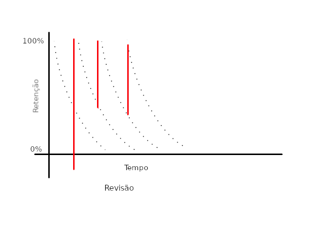

Crie flashcard para anki utilizando libreoffice
Introducao
Quem nunca se frustrou ao passar horas estudando um determinado topico por hora para em poucos minutos esquecer grande parte do que estudou? Ou quando um fato simplesmente nao surge com facilidade. Essa pequenas falhas de memoria podem impactar significativamente a produtividade nos estudos, seja de um idioma, uma determinada API de programacao ou um fato matematico. Por essa razao, manter um extenso conteudo na memoria torna-se um desafio jah que com o tempo a retencao do conteudo naturalmente declina. No entanto, exite metodos para tratar esse mau.
Deste modo uma metodologia sistematica de revisao deve ser empregada para evitar as constantes falhas de memoria. Os metodos de repeticao espacada oferecem uma maneira automatica para revisar os topicos com mais necessidade de estudos. Sistemas eletronicos como Anki auxilia no processo de revisao ao permitir o transporte de grande volume de cartoes virtuais em pendrive, smartphone, tablet. Por outro lado, o processo para gerar os cartoes sao lentos, e com pouca flexibilidade criativa, uma necessidade para criar flashcard de facil memorizacao. Portanto, a tecnica apresentada a seguir permite criar cartoes memoraveis com variedades de tipografia, cores e imagens empregando os programas anki e impress.
Antes de mais nada eh preciso conhecer O que eh e como funciona os repeticao espacada com flashcard. Estes metodos se baseam na curva do esquecimento, veja [3] e [4], que ilustra como o cerebro reduz a retencao de conteudo ao longo do tempo. Assim, a revisao em intervalo de tempo regular fortalece o conteudo na memoria. A maneira mais simples para realizar estas revisoe consistem em usar o sistema de leiter com decks de cartas em papel. Apesar da utilidade, o uso do papel nao eh pratico para um grande volume de cartoes. Com isso, os metodo automatizados via software, como Anki, torna-se mais atrativos por tamanha flexibilidade e confianca uma vez que os cartoes podem ser armazenados em hd/pendrive ou servidores como Google Drive, Dropbox, GMail, etc.

Figura 1: O grafico ilustra como o conteudo estudado decai ao longo do tempo.
Com tantas vantagem em ter os decks de cartas em meio eletronico, como gerar todas as cartas de maneira pratica? O metodo consiste em representar um deck de cartas como uma apresentacao no libreoffice impress, o powerpoint tambem funciona, com cada carta sendo 2 slides. O total de cartas deve ser multiplo de 2, pois, uma carta deve ser a carta da frente e a seguinte o verso. Cada carta deve conter a questao no slide da frente e a resposta no slide relativo ao verso. O conteudo das cartas pode ser criado com qualquer recurso do impress. A primeira etapa eh concluida ao exportar os slides como imagens png onde cada imagem deve estar em uma ordem tal que o slide frente segue imediatamento o slide verso.
Ferramenta para gerar os decks
O shell script descrito nesta secao executa os passos necessarios para
gerar os arquivo csv e png. Durante a execucao, a apresentacao no
formato do libreoffice eh convertido em um documento no formato
pdf usando o software libreoffice. Em seguida, o programa
ghostscript converte o arquivo pdf em uma sequencia de arquivos
png, onde a resolucao da imagem eh dada pela opcao -r32. A etapa
final consiste em gerar o arquivo csv que serah importado no anki.
- Programa principal
LO=libreoffice [[ -e "$1" && "${1: -4}" == ".odp" ]] || help DECK_DIR="/tmp/decks-$$" [[ -d ${DECK_DIR} ]] || mkdir -p ${DECK_DIR} name=$(basename -s ".odp" $1) ${LO} --headless --convert-to pdf --outdir "${DECK_DIR}" $1 > /dev/null 2>&1 gs -sDEVICE=pngalpha -o ${DECK_DIR}/${name}-%03d.png -r32 ${DECK_DIR}/${name}.pdf > /dev/null 2>&1 ANKI_COLLECTION_DIR=${HOME}/.local/share/Anki2/'User 1'/collection.media [[ -d ${ANKI_COLLECTION_DIR} ]] || help cp ${DECK_DIR}/*.png "${ANKI_COLLECTION_DIR}" # Gera arquivo csv a ser importado pelo anki create-csv-file
- Funcoes auxiliares
help() { echo "Uso: $0 <nome-apresentacao>" echo "Nota: O programa anki deve estar instalado." exit 1 } create-csv-file() { local images=$(ls ${DECK_DIR}/*.png | sort) local count=0 local fout="${name}.csv" local out="" for im in ${images}; do image=$(basename $im) if (($count % 2)); then out="${out} <img src=\"${image}\">\n" else out="${out} <img src=\"${image}\"> ," fi count=$(expr $count + 1) done echo -e ${out} > ${fout} }
Código completo
help() { echo "Uso: $0 <nome-apresentacao>" echo "Nota: O programa anki deve estar instalado." exit 1 } create-csv-file() { local images=$(ls ${DECK_DIR}/*.png | sort) local count=0 local fout="${name}.csv" local out="" for im in ${images}; do image=$(basename $im) if (($count % 2)); then out="${out} <img src=\"${image}\">\n" else out="${out} <img src=\"${image}\"> ," fi count=$(expr $count + 1) done echo -e ${out} > ${fout} } LO=libreoffice [[ -e "$1" && "${1: -4}" == ".odp" ]] || help DECK_DIR="/tmp/decks-$$" [[ -d ${DECK_DIR} ]] || mkdir -p ${DECK_DIR} name=$(basename -s ".odp" $1) ${LO} --headless --convert-to pdf --outdir "${DECK_DIR}" $1 > /dev/null 2>&1 gs -sDEVICE=pngalpha -o ${DECK_DIR}/${name}-%03d.png -r32 ${DECK_DIR}/${name}.pdf > /dev/null 2>&1 ANKI_COLLECTION_DIR=${HOME}/.local/share/Anki2/'User 1'/collection.media [[ -d ${ANKI_COLLECTION_DIR} ]] || help cp ${DECK_DIR}/*.png "${ANKI_COLLECTION_DIR}" # Gera arquivo csv a ser importado pelo anki create-csv-file
Conclusão
Foi apresentado uma maneira pratica de gerar cartoes para anki. As etapas apresentadas nao ficam restritas aos pacotes de software utilizados, portanto, pode-se empregar tecnica com outro pacotes que geram .png como gimp, photoshop, excel, etc.
A grande vantagem do metodo apresentado estah na portabilidade e riqueza visual dos cartoes. A portabilidade devido aos cartoes serem armazenados em um formato de arquivo aberto/nao-proprietario (open source) acessivel a qualquer sistema que suporta o formato. Para se ter uma ideia, eh possivel exportar no formato odp por meio do editor emacs. A riqueza visual estah relacionado a possibilidade de uso de todos os recursos de desenho, expressoes matematicas, tipografia, alinhamento dos sistemas de apresentacao.
No entando, perde-se espaco consideravel de armazenamento ao substituir um texto por uma imagem. Neste caso vale ponderar, se o deck consiste em apenas texto, entao eh melhor realizar a importacao diretamente no anki.
Outra desvantagem estah na impossibilidade de incluir sons e videos nos decks usando essa abordagem. Uma solucao para esse problema seria escrever scripts vba do libreoffice para gerar os arquivos necessarios de audio/video e inclui-lo no arquivo de importacao csv. Mas isso complica por demais :).